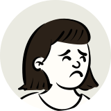
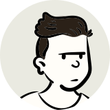
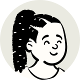

The register · Voices
Voices
5 young people, interviewed by Bella, on school, their minds, and what they want changed. Every profile is anonymous: a pseudonym or no name at all, an age band, a UN sub-region, a schooling status, and a drawing that is not a likeness.
The roll call
Every voice here is a row before it is a card. The number is the profile's permanent key, so it never reorders and never ranks. Nobody on this site is ever stamped: stamps are for numbers.
-
Row p01

Here.In a normal week, works in the morning, then goes to school if there is fee money; if there is not, works more.
-
Row p02
 Here.
Here.
Goes to school in the mornings when he can and works with a relative in the afternoons, because it is needed at home.
-
Row p03
 Here.
Here.
Nusrat was in school until recently and now spends most of her week at home, helping her family.
-
Row p04

Here.They go to school and help an older brother earn money afterwards.
-
Row p05

Here.They came to where they live now a few years ago; a normal week is school on some days and home a lot, because their language classes clash with their regular ones and they get confused about where to be.
Each profile was given with consent, checked for identifying details, checked against safe-messaging rules, and approved before it went up.
How every profile is checked